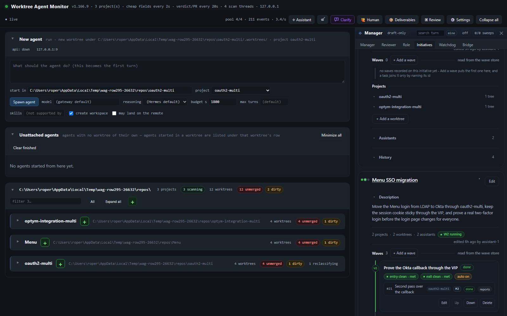
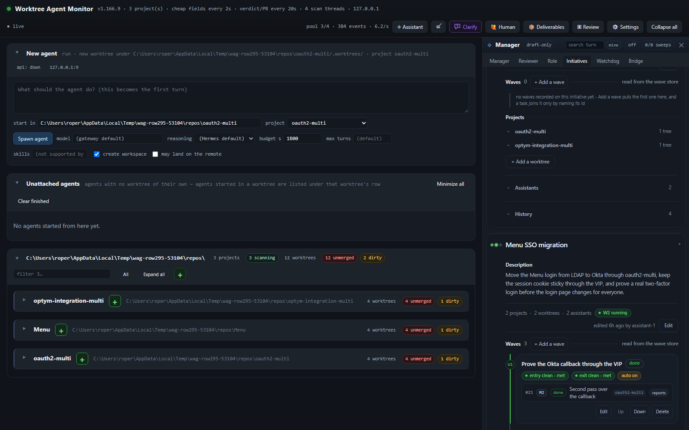
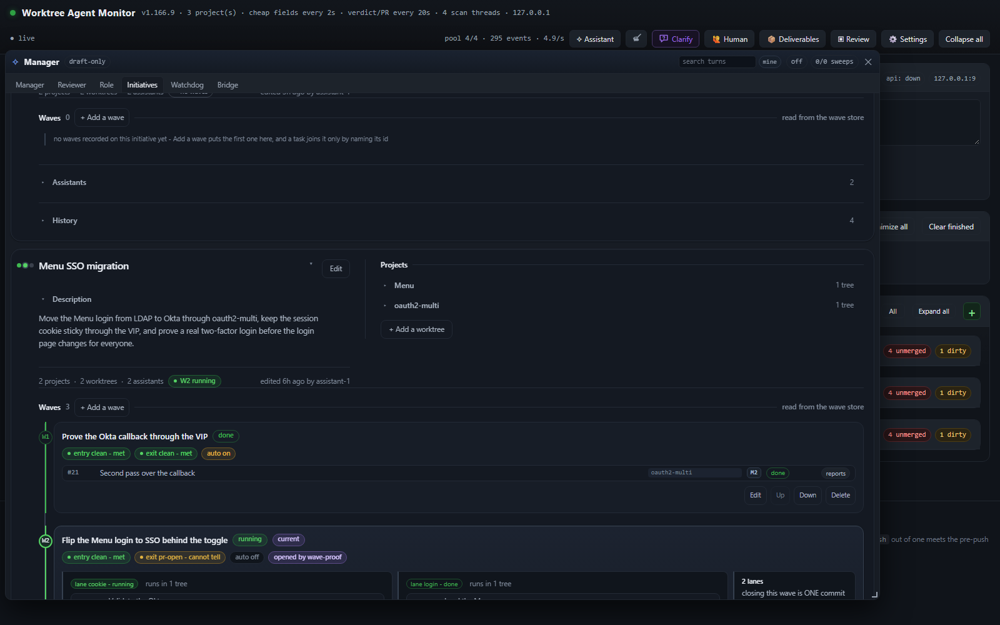
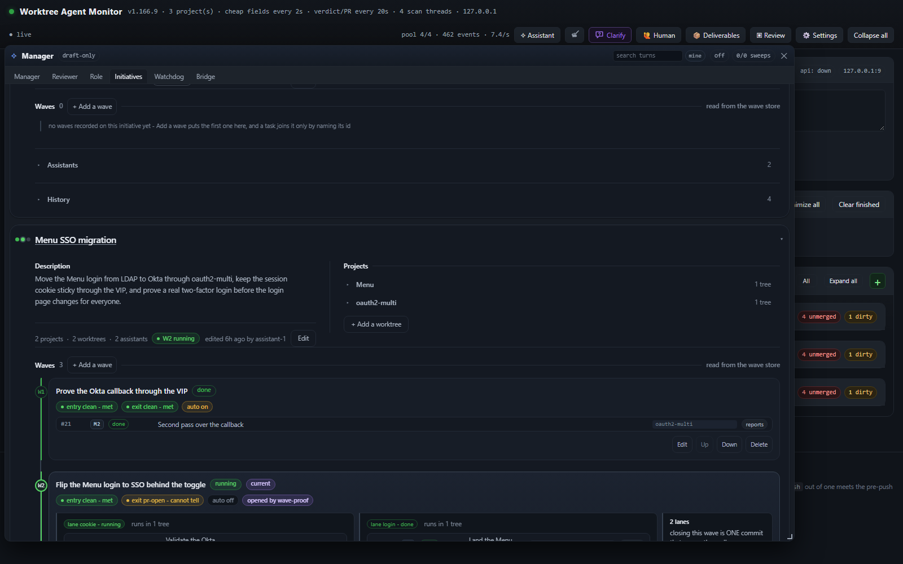

Row 295: the chips move left, the description clamps, and the name spans the card
The Initiatives tab's three asks from queue row 295, measured at the 480px dock and at a 1400px wide float, before and after.
- Branch
wtgui/read-queue-row-295-first-it-carries-the-614492- Gate
tools/verify-initiatives-bar-clamp-title.mjs, 103 checks- After
- 103/103 checks pass at both frames
- Before (base export of
main) - 42/87 checks pass, 45 failures, same gate
- Files
public/assistant.js,public/core/waves-lane.js,public/style.css- Gates moved with the layout
verify-initiatives-tab,verify-initiatives-scroll,initiatives-measure,capture-initiatives-redesign,test/initiative-fold.test.js
1. Which assumptions I implemented
All three assumptions filed on the row were implemented as written, and none of them was overruled afterwards.
| Ask | Assumption filed on the row | Status |
|---|---|---|
| 1. Move the OWNER and STATUS chips left, just after the task number | Nothing else moves: the reports chip stays at the right, the bar stays full width, the card gains no scrollbar | implemented. The project tag travels with the name (it names the same thing); the reports chip holds the right edge in both drawings |
| 2. Clamp the expanded description with a show more / show less control | Minimized by default at a few lines, the full text still in the DOM, the control drawn only on a real overflow | implemented. Three lines; the clamp is a line box so the whole text stays in the DOM; the control is hidden when the text fits |
| 3. The expanded name is a full-width header above both columns, wrapping like the minimized card | The name goes above both columns; its wrap must match the minimized card exactly | implemented. Same available width open and closed (measured), same break points (measured line by line) |
2. What changed
Ask 1: the task bar's order
The member row is drawn id, owner chip, status chip, title, project, reports (public/core/waves-lane.js:97 and :136). The wide drawing's grid columns follow the same order, 44px auto 80px minmax(0, 1fr) 150px auto (public/style.css:5827), and the wrapped drawing gives the reports chip margin-left: auto so it keeps the right edge at any width (public/style.css:5791).
Ask 2: the clamped description
An expanded card draws the whole description and clamps it with three line boxes (public/style.css:5332). The label row carries the word and one control (public/assistant.js:4087), and the control is decided by measurement: the clamp is lifted for the length of one read, the natural height is compared with the clamped height, and the button is hidden when the text fits (public/assistant.js:4017). A pane with no layout yet is measured on its next frame rather than guessed at (public/assistant.js:4008). The reader's own state for one card is a set (public/assistant.js:3492), so a repaint cannot shut a description the reader opened.
Ask 3: the name's row
The wide grid gives the head both columns, "head head" above "desc side" (public/style.css:5915). The open head then pays the LEDGER row's own insets rather than the plate's, and the caret is taken out of the row's flow into the same 18px column the minimized row uses (public/style.css:5213), so the title is offered exactly the width the minimized row offers. Edit moved to the facts row (public/style.css:5378, public/assistant.js:4123): anything in the name's row shortens the title, and a control beside it breaks the words one place earlier, which is the defect itself.
3. The measurements
Every number below is read from the painted page by the gate, at both frames, on the base export of main and on this branch. The same gate is what fails on the base: nothing here is a description of the layout.
Ask 1: the bar's order and the right edge
| Reading | Frame | Before | After |
|---|---|---|---|
| Wave bar children, mapped by class and read in DOM order | dock 480 | id, title, project, owner, status, reports | id, owner, status, title, project, reports |
| Same bar, first line read left to right | dock 480 | id, title, project, owner, status | id, owner, status, title |
| Reports chip's right edge against the bar's content right edge, bar #11 | dock 480 | 1280 vs 1540 | 1540 vs 1540 |
| Bar width against its section's width, bars #21 / #11 / #13 | dock 480 | 351/351, 324/324, 324/324 | 351/351, 324/324, 324/324 |
| Card scrollWidth / clientWidth (row 291's rule) | dock 480 | 461/461 | 461/461 |
| Wave bar children, wide drawing | wide 1400 | id, title, project, owner, status, reports | id, owner, status, title, project, reports |
| Reports chip on the right edge, every bar | wide 1400 | right edge held | right edge held |
At the dock the bar wraps: the id, the owner, the status and the start of the name share the first line, and the reports chip sits alone at the right of a later line because 324px of lane cannot hold all six facts. The order the reader asked for is the order it reads.
Ask 2: the clamp
| Reading | Frame | Before | After |
|---|---|---|---|
| Quarter-end description: drawn height / height it needs | dock 480 | 280px / 280px (whole) | 60px / 280px (3 x 20px) |
| Its show more control | dock 480 | absent | drawn, 82.3 x 30px, reads "show more" |
| Its body's textContent against the store's description | dock 480 | 776 chars = 776 | 776 chars = 776, last words findable in the page |
| Quarter-end description after pressing show more | dock 480 | no control to press | 280px drawn of 280px needed, control reads "show less" |
| Quarter-end description after pressing show less | dock 480 | - | 60px, 3 lines, control reads "show more" |
| Batch sweeper description (fits the clamp): drawn / needed | dock 480 | 40px / 40px | 40px / 40px, control hidden, 0px wide |
| Quarter-end description: drawn / needed | wide 1400 | 260px / 260px | 60px / 260px |
| Batch sweeper: control drawn | wide 1400 | no control | hidden, 0px wide (it fits) |
Ask 3: the name's row and its wrap
| Reading | Frame | Before | After |
|---|---|---|---|
| Kafka card: the name's row width, closed / open | dock 480 | 410px / 401px | 410px / 410px |
| Kafka title: available width, closed / open | dock 480 | 392px / 323.72px | 392px / 392px |
| Kafka title: the words on each line, closed | dock 480 | "Kafka rating pipeline hardening across the consumer, the" / "retry topic and the DBA-signed verify pack" | identical |
| Kafka title: the words on each line, open | dock 480 | "Kafka rating pipeline hardening across the" / "consumer, the retry topic and the DBA-signed" / "verify pack" (3 lines) | identical to closed (2 lines) |
| Kafka title height, closed / open | dock 480 | 38.75px / 58.13px | 38.75px / 38.75px |
| Kafka title's right edge against the row's right edge minus the caret column | dock 480 | 1497.72 vs 1557 | 1566 vs 1566 |
| Every card's name row, closed / open | wide 1400 | 1329px / 498.09px (left column only) | 1329px / 1329px (both columns) |
| Every card's title: available width, closed / open | wide 1400 | 1311px / 420.81px | 1311px / 1311px |
| Kafka title lines, closed / open | wide 1400 | 1 line / 2 lines | 1 line / 1 line |
| The name's row against the two columns (open) | wide 1400 | head 62..560, over the left column only | head 62..1391, desc 62..520.2, projects 584.09..1382 |
| Font and line height, both states | both | 15.5px / 19.375px | 15.5px / 19.375px |
The available width is measured by putting one long unbreakable word into the title for the length of a synchronous read, so a short title reports the width it would be given rather than the width its own text happens to take. The line comparison is per character (one Range per character, grouped by line), so two drawings with equal widths but a different break still compare unequal.
4. What was run
| Run | Result |
|---|---|
node tools/verify-initiatives-bar-clamp-title.mjs (new) | 103/103 on this branch, 42/87 on the base export (45 failures, the same gate with --root) |
node tools/verify-initiatives-scroll.mjs | 35/35 |
node tools/verify-initiatives-redesign.mjs | 18/18 (100%), before 4/16 (25%) |
node tools/verify-waves-lane.mjs | 79/79 |
node --test test/initiative-fold.test.js test/waves-lane.test.js | 70/70 |
node tools/verify-initiatives-tab.mjs | 67/78, and 66/77 on the base export with THE SAME 11 failing check names - the sandbox's attach flow and its project grouping are red before this change |
node tools/verify-wave-reports.mjs | 2/4 here and 2/4 on the base export, "the panel seeded an assistant" fails on both |
The two red gates were run on the base export of main as well as here: the failing check names are identical, so neither is this branch's. The export is a git archive of main under the scratch directory, initialised as a one-commit repo because server.js reads git rev-parse at boot.
5. Screenshots


#id | owner | status | name, reports at the right, the description clamped with show more, the name's row the minimized row's width.

6. Notes a reviewer will want
- The two gate logs, verbatim, are beside this page as
before-run.txtandafter-run.txt; the counts in section 4 are taken from them. - A negative right margin on the open head (
calc(var(--tab-s2) - var(--tab-s4) - 1px)) is what makes the open row pay the ledger row's insets rather than the plate's. It is the one place the two drawings' boxes are reconciled by hand, and the gate asserts the result rather than the rule. - The clamp's three lines are a stylesheet literal with the module's constant named in its comment; the gate measures the drawn height against three line heights, so a change to either number fails.
- Edit moved from the name's row to the facts row. It is drawn only on an open card, as before, and the facts row is drawn on every card, so it is still reachable in every state it was reachable in.
- The gate is new and carries three ask-specific proofs in one run; the page gates it grew out of (
verify-initiatives-tab,verify-initiatives-scroll,verify-waves-lane) still run, and the description's own fold cases in the tab gate were rewritten for the clamp rather than deleted.